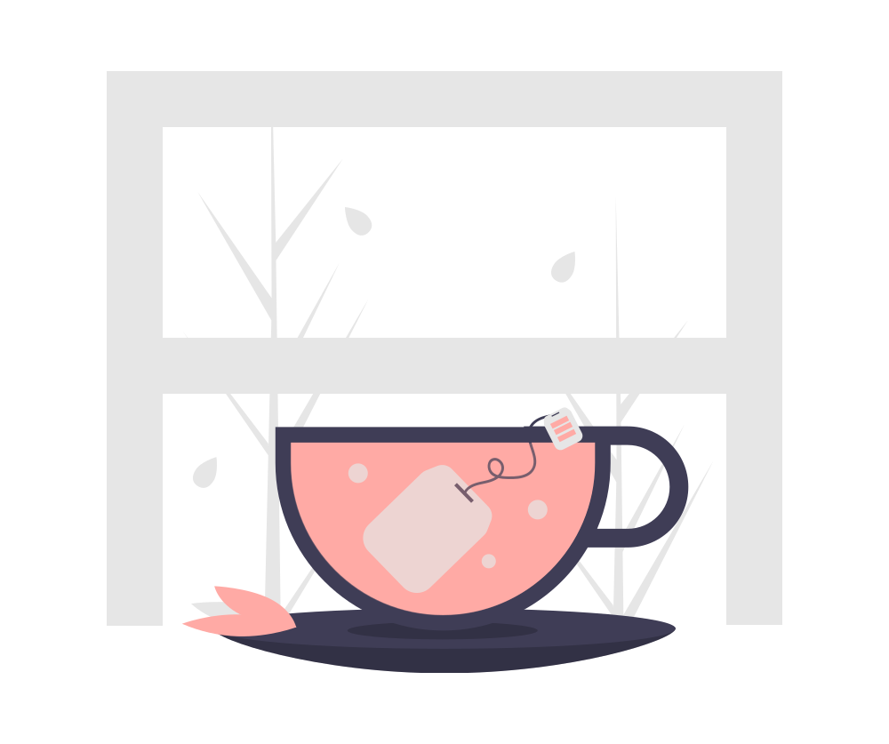

by opportunity, I found there is a coding school called Ecole 42
that anyone can apply regardless of their academic background
and they offer the lectures with no tuition
(which is the coolest factor;))

a web programmer.

hey, welcome to my world.
my name is Blanche.
I’m pianist and web programmer.
I was born in Seoul, South Korea.
I started to learn piano when I was 6 years old.
I studied classical music in a University in Seoul.
I moved to Paris after graduate to study piano more.
by opportunity, I found there is a coding school called Ecole 42
that anyone can apply regardless of their academic background
and they offer the lectures with no tuition
(which is the coolest factor;))
you could wonder how about piano?
I have playing the piano almost since 30years ago.
you can see how i love the piano.
to play the piano is my destiny and that was my first professional job.
now I’m more focus as a developer so I can’t play that much.
but I still love to organise small concert.
when I have time and my dream is to live a house can offer many concerts.
let me talk about more of other things.
i am passionated to travel.
my to do list of life is visit all country of the earth.
i need to travel at least 2 times by a year.
but what I really want is not just be a tourist.
it means when I visit some cities I want to live at least 2 weeks.
a major advantage of being a programmer is I could work even during visiting other cities.
what i need is only my laptop and wifi.
so now I am focused on my own web project.
I’ll introduce you soon about that.
in order to complete my mission I should learn many things
so I’m still learning and I love to learning.